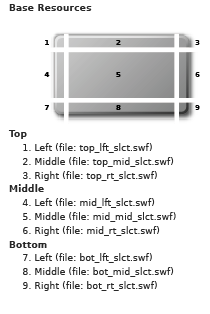
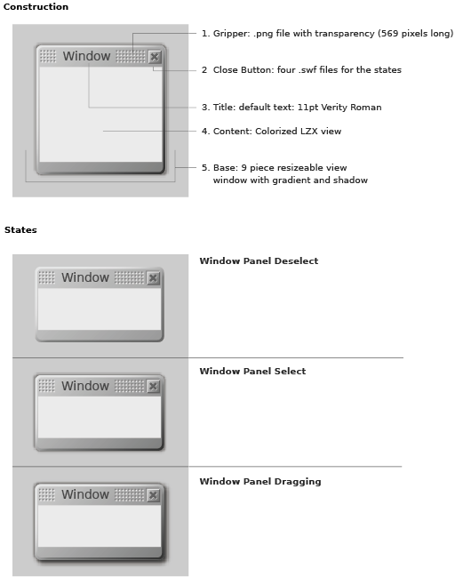

window
example
LZX Reference
filename: windowpanel.lzx
Window panel is a fixed-size window. It is also the basis for "window" (which is resizable), "modal dialog", and "alert". The base art for "window panel" is constructed of 9 pieces. 4 corners, 4 resizable middle edges and the middle. There are also controls included: the gripper (and title) and close button (with 4 states).
The window panel has 3 states: deselected (_dslct), selected (_slct) and dragging (_drag). The background of the deselected state has less contrast and no shadow. The selected state has more contrast and a small perimeter shadow. Dragging the window creates a more pronounced shadow, adding to the illusion that the window has been brought to front and is above other UI objects. Drag state only applies to resources on the right and bottom sides, the top and left use the same resources as the selected state.

